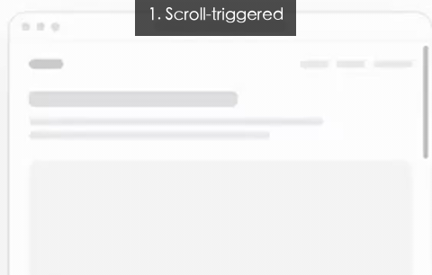
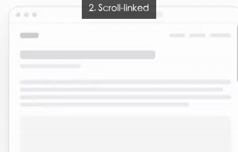
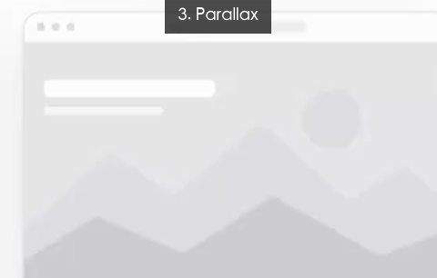
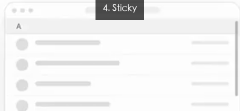
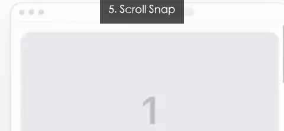
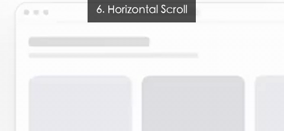

01
Scroll-triggered
滚动触发

元素滚进屏幕的那一刻，自动开始播放一段动画，播完即停。
适合卡片淡入、模块逐个入场、博客文章随滚动展开。
02
Scroll-linked
滚动联动

动画的进度直接绑定滚动条：滚多少，动多少；回滚，动画倒回。
适合顶部阅读进度条、随滚动改变的颜色 / 不透明度、数字计数。
03
Parallax
视差滚动

多层元素以不同速度移动，营造深度感。背景比前景慢，景深远；近景比远景快，对比强。
适合首屏大图背景、文章插图、3D 感的产品落地页。
04
Sticky
吸顶

元素滚到指定位置就钉住不动，再继续滚动后页面其他内容从它下方穿过。
适合通讯录字母标题、目录导航、二级标题、回到顶部按钮。
05
Scroll Snap
滚动吸附

滚动一次只能停一屏 / 一卡，手指松手时被强制对齐到对齐线。
适合全屏翻页式落地页、产品介绍页、PPT 风格的 Web 演示。
06
Horizontal Scroll
横向滚动

竖向滚轮触发的不是上下移动，而是一组卡片的横向位移。
适合作品集瀑布流、品牌故事时间线、产品对比展示。
一句话速查
- Scroll-triggered — 滚到屏幕就播完（入场动画）
- Scroll-linked — 滚多少动多少（进度条 / 计数）
- Parallax — 背景比前景滚得慢（视差）
- Sticky — 滚到位置就钉住（导航 / 二级标题）
- Scroll Snap — 一次只停一屏（全屏翻页）
- Horizontal Scroll — 往下滚，卡片横着走